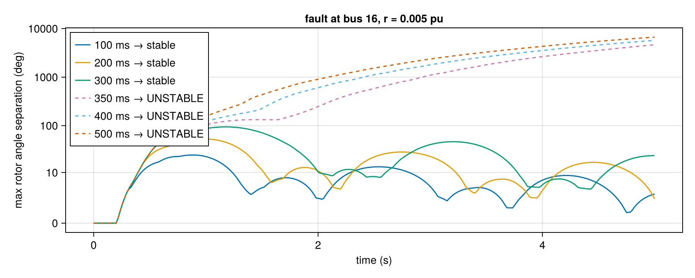
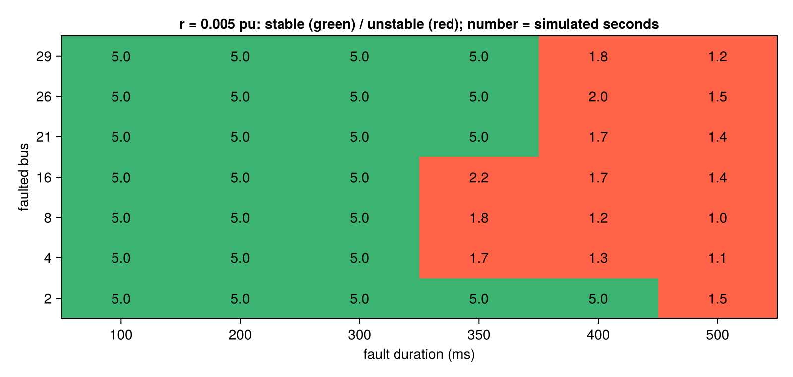

Generating training data
GradPower ships a pipeline that generates transient-stability datasets: many fault simulations over many operating points, with a stability label for each, written to HDF5. It lives in scripts/:
| file | role |
|---|---|
scripts/generate_dynamics.jl | the driver: reads a TOML sweep, shards across MPI/SLURM ranks, writes one HDF5 per rank |
scripts/dynstab_io.jl | the building blocks: case loading, load scaling, simulation, labels, HDF5 layout |
scripts/sweeps/*.toml | sweep definitions |
scripts/tutorial_generate_data.jl | a commented single-process walkthrough |
julia --project=scripts -e 'using Pkg; Pkg.develop(path="."); Pkg.instantiate()' # once
julia --project=scripts scripts/generate_dynamics.jl scripts/sweeps/example.toml --dry-run
julia --project=scripts scripts/generate_dynamics.jl scripts/sweeps/example.tomlOne sample
A sample is one simulation: an operating point (load scale λ), a fault (bus, resistance, duration) and the response. simulate_sample records only what the dataset stores:
- bus voltage magnitude and angle;
- machine rotor angle and speed, every
downsample-th step, inFloat32.
The labels are accumulated from every step by a step callback.
using GradPower, CairoMakie
include(joinpath(pkgdir(GradPower), "scripts", "dynstab_io.jl"))
case = Dict("raw" => "examples/IEEE39.raw", "dyr" => "examples/IEEE39_gov.dyr")
sys, base = build_system(case)
dprob, residual = initialized_problem(sys)
z0 = copy(dprob.zvec)
function sample(bus, r, duration; kw...)
empty!(sys.dynamic.events)
GradPower.add_event!(sys, ContingencyEvent(sys.busmap[bus], r, 0.2, 0.2 + duration))
dprob.zvec .= z0
simulate_sample(dprob, sys, 5.0; dt = 1/120, downsample = 2, kw...)
end
ch, m = sample(16, 0.005, 0.1)
(keys(ch)..., ), size(ch["bus_vm"]), m["stable"], round(m["max_angle_sep_deg"], digits = 1)(("T", "bus_vm", "gen_omega", "bus_va", "gen_delta"), (39, 301), true, 24.2)Stable or not?
The label is stable = true when both hold:
- the rotor angles never separate by more than 180° relative to the pre-fault state;
- the swing has decayed to at most half its peak by the end of the window.
Sweeping the fault duration at one bus crosses the critical clearing time:
durations = [0.10, 0.20, 0.30, 0.35, 0.40, 0.50]
fig = Figure(size = (900, 360))
ax = Axis(fig[1, 1], xlabel = "time (s)", ylabel = "max rotor angle separation (deg)",
yscale = Makie.pseudolog10, yticks = [0, 10, 100, 1000, 10000],
title = "fault at bus 16, r = 0.005 pu")
for d in durations
ch, m = sample(16, 0.005, d)
delta = ch["gen_delta"]
sep = vec(maximum(delta .- delta[:, 1], dims = 1) .- minimum(delta .- delta[:, 1], dims = 1))
t = (0:size(delta, 2) - 1) .* (2 / 120)
lines!(ax, t, rad2deg.(sep), label = "$(Int(1000d)) ms → " * (m["stable"] ? "stable" : "UNSTABLE"),
linestyle = m["stable"] ? :solid : :dash)
end
axislegend(ax, position = :lt)
fig
Up to 300 ms the machines swing a few tens of degrees and settle. From 350 ms they separate without bound, because a machine slips poles and nothing trips it. The critical clearing time of this fault lies between the two. The gap between the two populations is huge, and that is why the label is robust.
A small sweep
The same loop over buses and durations gives a picture of the case's stability boundary. With early_stop_sep, unstable samples are cut as soon as they pass 360°, which saves most of their cost without changing any label:
buses = [2, 4, 8, 16, 21, 26, 29]
grid = falses(length(buses), length(durations))
tstop = zeros(length(buses), length(durations))
for (i, b) in enumerate(buses), (j, d) in enumerate(durations)
_, m = sample(b, 0.005, d; early_stop_sep = deg2rad(360))
grid[i, j] = m["stable"]; tstop[i, j] = m["t_stop"]
end
fig = Figure(size = (800, 380))
ax = Axis(fig[1, 1], xlabel = "fault duration (ms)", ylabel = "faulted bus",
xticks = (1:length(durations), string.(Int.(1000 .* durations))),
yticks = (1:length(buses), string.(buses)),
title = "r = 0.005 pu: stable (green) / unstable (red); number = simulated seconds")
heatmap!(ax, 1:length(durations), 1:length(buses), Float64.(permutedims(grid)),
colormap = [:tomato, :mediumseagreen], colorrange = (0, 1))
for i in eachindex(buses), j in eachindex(durations)
text!(ax, j, i, text = string(round(tstop[i, j], digits = 1)), align = (:center, :center))
end
fig
Every unstable cell stopped 1–2 s into the run instead of simulating the full 5 s. The boundary moves with the location: a fault at bus 2 can last 100 ms longer than one at bus 16.
The sweep file
A sweep is the cross product of loading draws × fault buses × resistances × durations:
output_root = "./dynstab_out"
[sim]
t_final = 10.0
dt = 0.008333333333333333 # 1/120 s
downsample = 2 # store every 2nd step
early_stop_deg = 360.0 # optional: stop unstable runs early
[load]
distribution = "uniform" # lambda ~ U(low, high)
low = 0.95
high = 1.05
n_samples = 10 # operating points
seed = 20240917
[fault]
buses = "all" # or a list of PSS/E bus numbers
r_fault = [0.01, 0.05, 0.2]
t_on = 0.2
durations = [0.10, 0.20, 0.25, 0.30, 0.35]
[label]
angle_sep_threshold_deg = 180.0
tail_fraction = 0.2
decay_ratio = 0.5
[[cases]]
name = "ieee39"
raw = "examples/IEEE39.raw"
dyr = "examples/IEEE39_gov.dyr"For each λ draw, the power flow and initialization run once and are shared by all the faults below it. Before using an operating point, the driver also checks that it is a stable equilibrium (check_self_stability).
HDF5 layout
<case>_rank0000.h5
├── attributes: schema_version, case_name, baseMVA, dt, dt_eff, t_final, downsample, ...
├── grid/ topology, once per file: bus_id, bus_type, branch_index, gen_bus, ...
└── samples/
├── 000001/ bus_vm, bus_va [n_bus × T] gen_delta, gen_omega [n_gen × T] (Float32)
│ attributes: load_scale, fault_bus_ext, r_fault, t_on, t_off, clearing_time,
│ stable, max_angle_sep_deg, max_freq_dev, tail_peak_ratio, ...
│ (+ terminated_early, t_stop, stop_reason with early stop)
└── .../grid holds what a graph neural network needs: the nodes are buses, the edges are branch_index, and machines are attached through gen_bus.
Pitfalls
These are documented in detail in scripts/README_datagen.md. The most important:
- The horizon must resolve the first swing. Large systems peak late; use 10 s for ACTIVSg2000.
- Clearing times must straddle the critical clearing time, or every sample lands in one class.
- Fault severity is not monotonic in
r. A resistive fault absorbs the most power whenrmatches the local Thevenin impedance, not asr → 0.